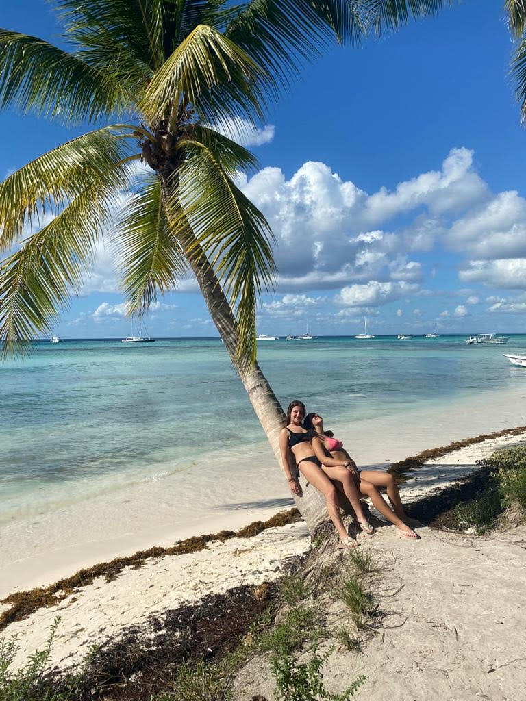
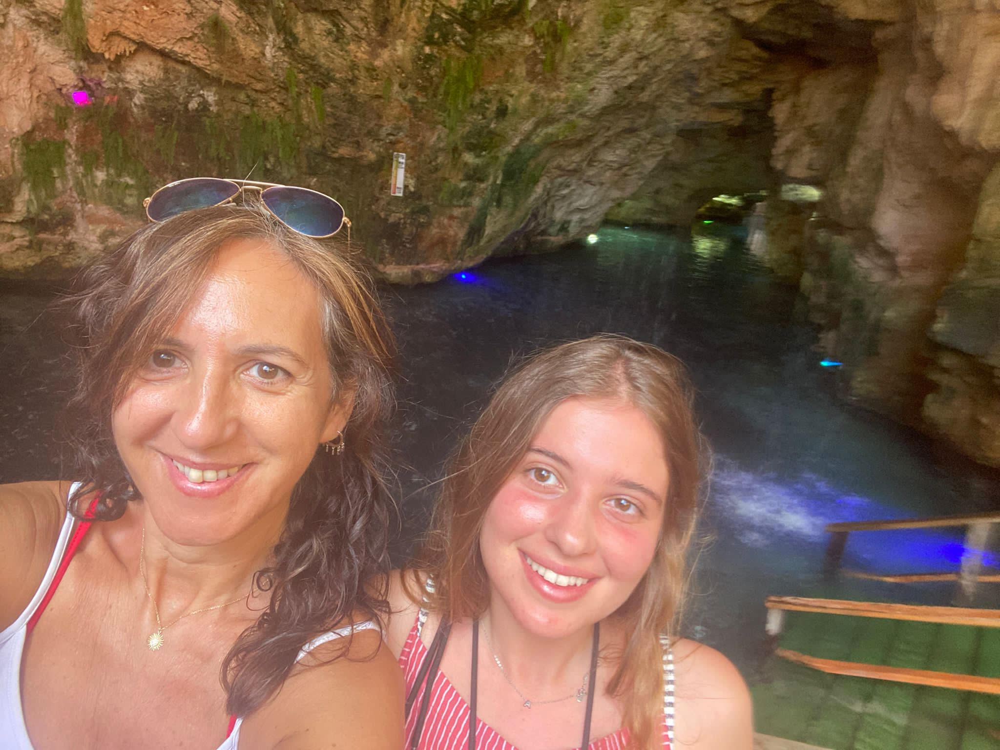
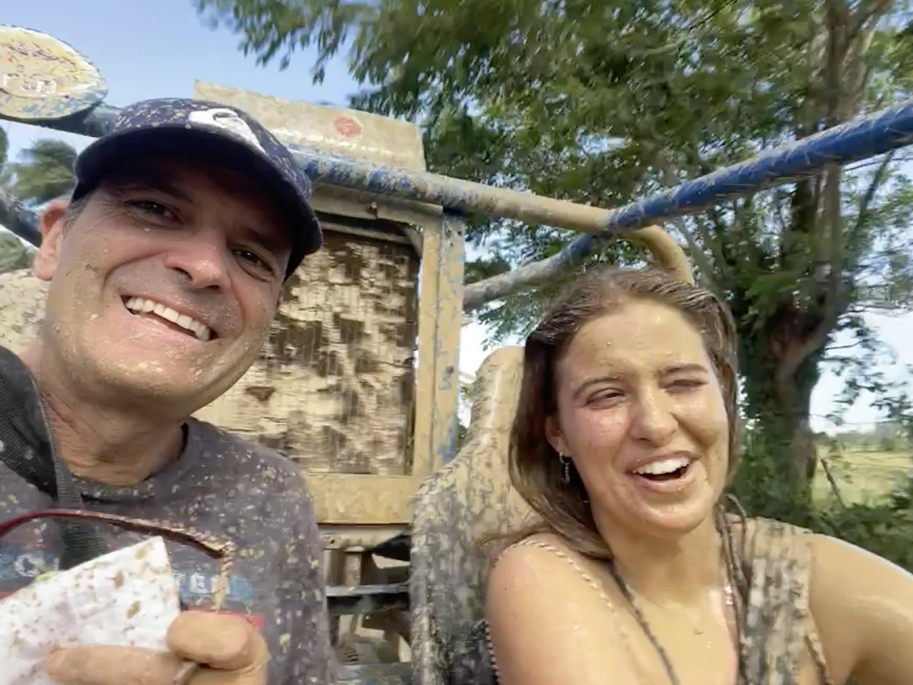

Mi viaje a Punta Cana fue una experiencia inolvidable llena de momentos mágicos y paisajes paradisíacos. Desde el momento en que pisé la fina arena blanca y sentí el cálido abrazo del sol caribeño, supe que estaba en un lugar especial. Las aguas cristalinas y turquesas del océano Atlántico me invitaron a sumergirme en un mundo submarino de colores vibrantes y vida marina fascinante. Las palmeras me brindaron sombra mientras disfrutaba de los sabores exóticos de la gastronomía local. Cada puesta de sol sobre el horizonte infinito era un espectáculo que me dejaba sin aliento. Sin duda, Punta Cana se ha ganado un lugar especial en mi corazón y estoy ansioso por regresar algún día.
|  | El día que visitamos Isla Saona quedará grabado en mi memoria para siempre. Explorar sus senderos rodeados de exuberante vegetación y descubrir la rica vida marina en sus arrecifes fue una experiencia que superó todas mis expectativas. Fue un día lleno de aventuras y descubrimientos que nunca olvidaré. |
La excursión al cenote fue una experiencia verdaderamente fascinante. Descender por los misteriosos pasadizos subterráneos y explorar las formaciones rocosas milenarias nos sumergió en un mundo completamente diferente. |
 |
|  | ¡Qué emocionante aventura en buggies! Sentir la adrenalina mientras recorríamos caminos accidentados y atravesábamos terrenos emocionantemente embarrados fue una experiencia única. El barro salpicando por todas partes añadió un toque de diversión y espontaneidad a la jornada. |